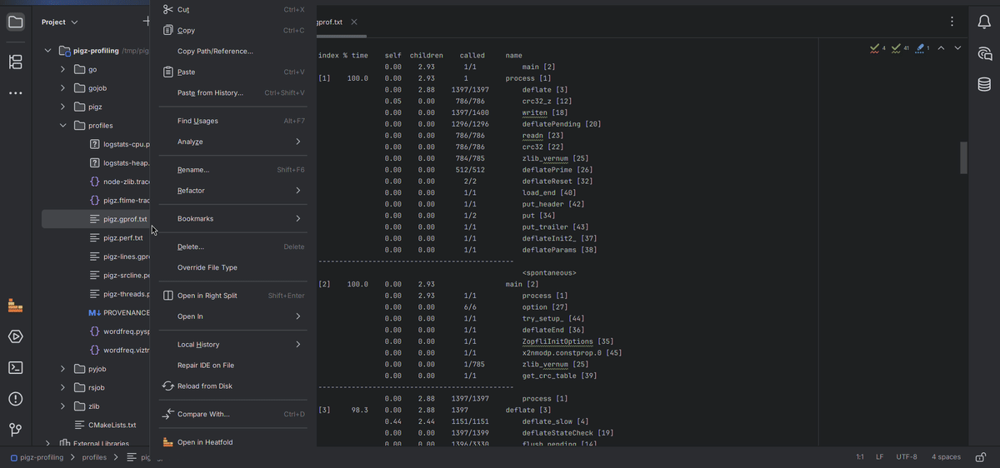
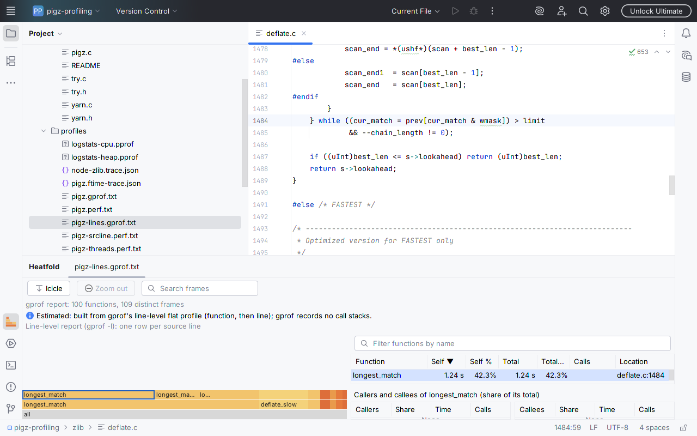
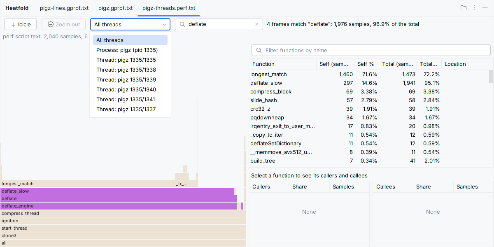
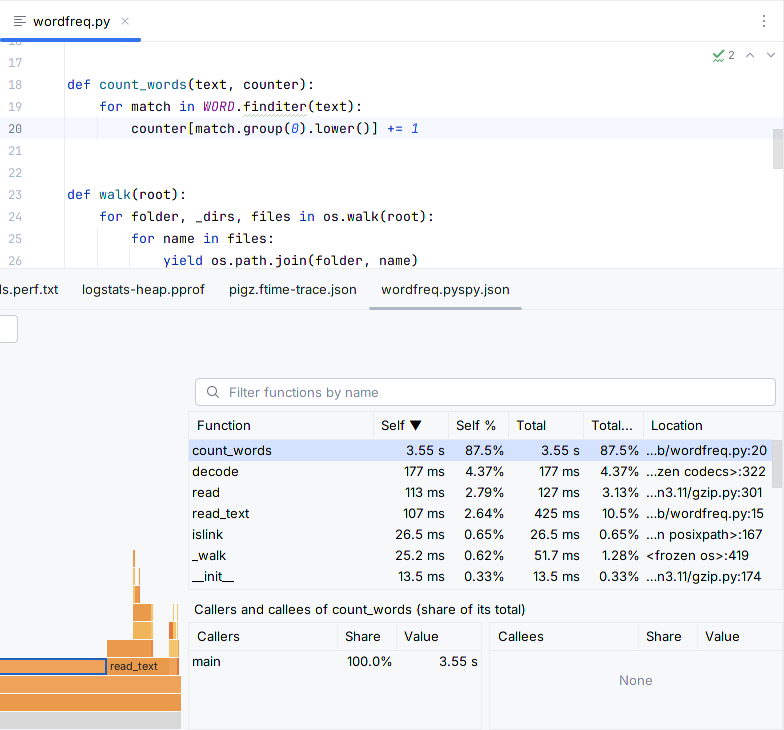
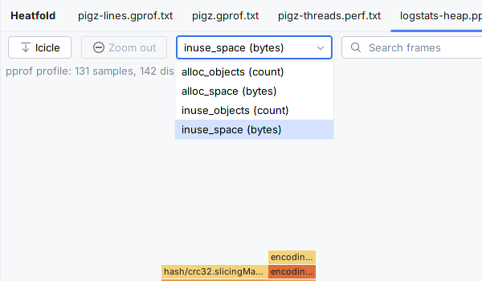
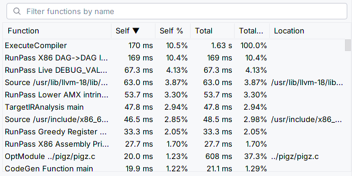
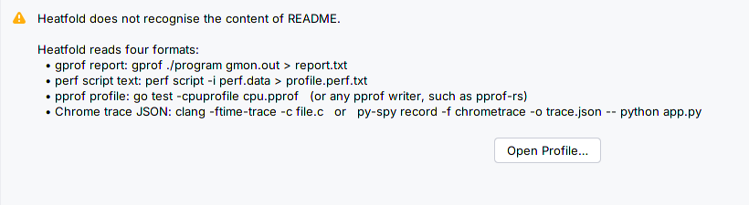

![IntelliJ IDEA with the pigz-profiling project open: zlib/deflate.c in the editor, and below it Heatfold's tab for pigz.gprof.txt. The table lists every function with self and total time, percentages and calls: longest_match 2.17 s, 74.1%, 18,494,188 calls; deflate_slow 440 ms, 15.0%, 1,151 calls. deflate_slow is selected: its caller deflate at 100.0%, its callees longest_match at 75.3%, _tr_flush_block at 7.29% and fill_window at 2.08%. On the left the estimated flame graph in icicle view, all, main, process, deflate, deflate_slow, longest_match, with deflate_slow outlined](img/gprof-report-window.png)
perf script text with threads and srcline jumps; pprof outside GoLand; a hot-functions table for traces; and paths from another machine mapped onto your project. Heatfold does not record or attach to processes.
Watch it work
gprof -l row opens zlib/deflate.c at line 1484; the same program under perf: search, one thread, zoom; a Go heap profile's sample types; a clang -ftime-trace of pigz.c. Heatfold 1.1.0 in IntelliJ IDEA 2025.3 on Linux, recorded at 60 fps with a stand-in for Marketplace licensing (the recording machine cannot start a trial).
In the IDE, for real

gprof -l report: zlib/deflate.c opens at line 1484.
perf, six threads: pick one, or search. "deflate": 1,976 samples, 96.9% of the total.
/home/ci/build opens your copy of wordfreq.py.



clang's build time goes.
How we tested
| Where (Linux) | What ran |
|---|---|
| IntelliJ IDEA, PyCharm 2025.3 and 2026.3 | Used in the IDE window, every panel and message (1.0.0, same interface as 1.1.0); 1.1.0 in IntelliJ IDEA 2025.3 for these images |
| CLion, RustRover 2025.3 | Headless: all four formats open, C and Rust names resolve. Not yet in a window |
| All four, 2025.3 and 2026.3 | Plugin Verifier: compatible |
| Windows, macOS, Remote Development | Not yet tested |
On real profiles of Lua 5.4.7, pigz, a Go program and a py-spy trace, the table matches gprof, perf report, go tool pprof -top and a replay of the trace. A 500 MB perf script opens in 8.8–9.3 s, a 200 MB trace in 3.5–3.8 s (default 2 GB heap, 4-CPU machine, three runs).
Known limits
- No
perf.dataorgmon.out(runperf scriptorgproffirst), folded stacks, cProfile, JFR or V8; no timeline, comparison or export. - gprof's flame graph is an estimate, and says so. In IntelliJ IDEA and PyCharm, C functions open from
gprof -lor srcline, not from names. - One 500 MB perf script fits the default heap; larger files are refused with a message.
Details
Sold through JetBrains Marketplace; trial and purchase use the IDE's licence dialog, with no popups of Heatfold's own. Source code included in the plugin zip. No network calls, no telemetry (privacy). support@ochrestack.com · quick start
How the images were made
./gradlew runIde (IntelliJ IDEA 2025.3) under a virtual display, real mouse and keyboard, with a project of pigz 2.8, zlib 1.3.1, a Go and a Python program. The sandbox cannot start a trial, so a stand-in for Marketplace licensing was used.
Not affiliated with JetBrains, Google, the Linux perf project, GNU, LLVM or py-spy.